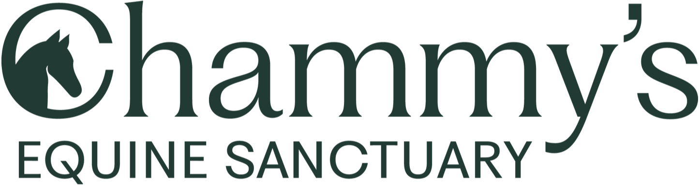
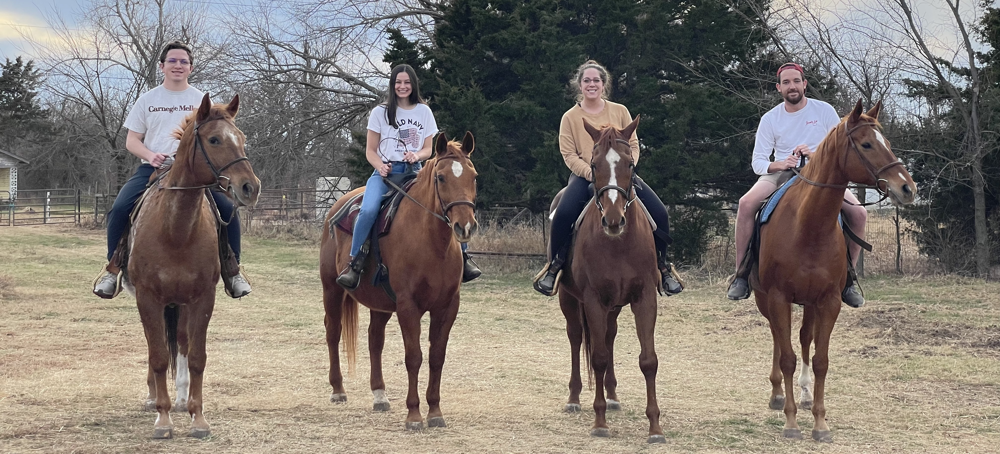
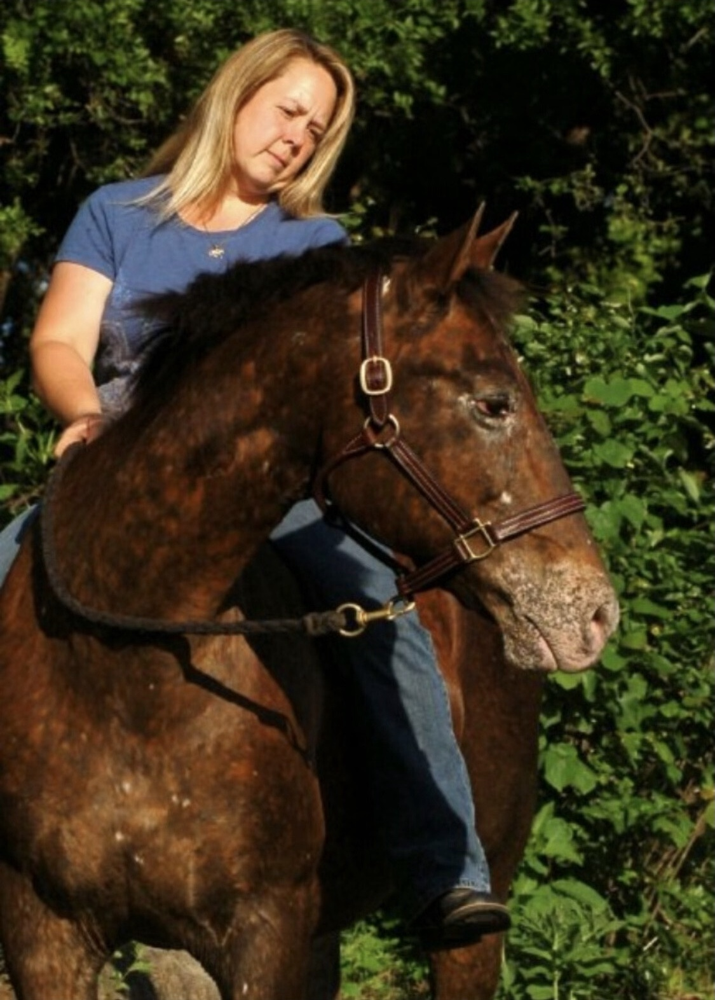

A mission-driven 501(c)(3) organization dedicated to improving the welfare of neglected equestrian animals in Guthrie, Oklahoma.

Chammy's Equine Sanctuary is a haven for 13 horses, 9 mini horses, 5 small ponies, 3 large ponies, and 6 donkeys. Since 2015, our President, Angela—a full-time public school teacher and the sanctuary's sole staff member—has voluntarily dedicated her time to the daily care and rehabilitation of these animals and many others. Her work has created a refuge for neglected equines, contributed to natural disaster rescue efforts, and helped educate the community on responsible equine ownership.
In 2024, Chammy's Equine Sanctuary Foundation was established to support Angela's unwavering commitment and ensure the long-term sustainability of her mission. A dedicated board of directors was formed to provide strategic oversight, governance, and stewardship of resources. Together, we remain focused on protecting, rescuing, and advocating for equines in need.
100% of all donations to the general fund will be used to take care of our animals and further our mission. This includes covering essential monthly expenses such as grain, hay, and medical care, ensuring our equestrian residents receive consistent nutrition, care and attention.
While our immediate priority is meeting the daily needs of our animals, we do have future goals we'd love to share:
Your generosity helps us care for our animals today and build a brighter future for them tomorrow.
We envision a world where every equine—horse, pony, mini, or donkey—lives free from neglect, cruelty, and suffering. Our goal is to ensure that neglected equines receive the individualized care they need to heal physically, emotionally, and psychologically. Through compassionate rescue and rehabilitation, we help them recover and thrive in safe, nurturing environments.
Beyond rescue, our vision includes a future where responsible equine ownership is the norm. Through education and outreach, we aim to foster a culture of empathy, accountability, and proper care within the equestrian community and beyond. By equipping individuals with the knowledge and resources to prevent harm, we strive to stop neglect before it begins.
Realizing this vision requires collective effort. We are committed to working alongside fellow advocates, organizations, and volunteers to champion equine welfare. Together, we will build a more compassionate world—one where all equines are treated with dignity, kindness, and respect.

Did you know? Chammy holds a special place in Angela's heart as her first horse, igniting her lifelong dedication to caring for neglected equestrian animals. Chammy's blankets were also green, just like our logo!
Keep up with the latest news, heartwarming animal stories, and updates from our foundation.
Visit Our Facebook Page